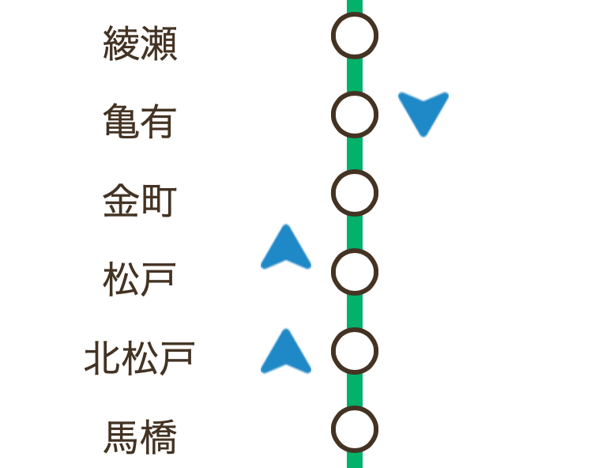

このサイトは？
常磐線を走行する小田急線車両を表示するサイト。
小田急線車両が走行している場合、水色のとんがりマークにより表示する。

※走行位置は時刻表より指定しており、実際の走行位置ではなく、おおよその位置を表しております。
※運行状況により、実際の状況と大きく異なる場合があります。ご注意下さい。
※小田急線車両が走行していない時間帯は水色のとんがりマークは表示されません。
常磐線を走る小田急線車両とは？
常磐線（各駅停車）は、千代田線、小田急線と直通運転をしており、同じ路線を３社の車両が走行している。
その中でも小田急線車両は圧倒的に少ない。
小田急線車両はいつ来るのか？
ネットで調べてみたが、そんなマイナーな情報を扱うサイトは見つからなかった。
「常磐線を走る小田急線車両」とは、本数が少なく、情報もない。そんなレアな車両である。
問い合わせ
何かお気づきの点などございましたら、以下にご連絡下さい。
support@tom-lab.com